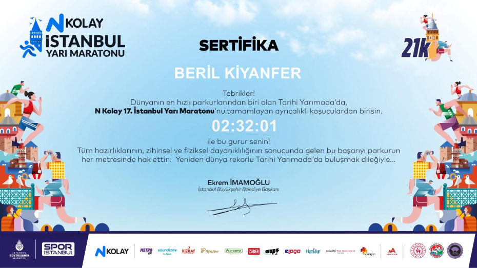
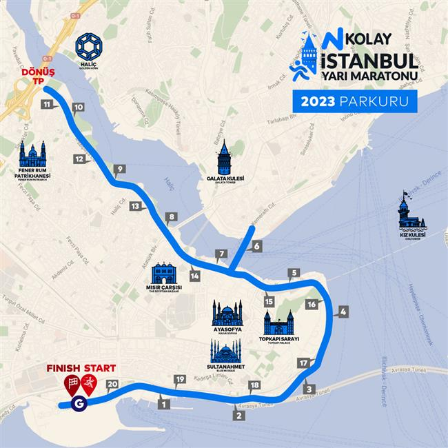

Race Record
Event: İstanbul Yarı Maratonu
Distance: 21 km
Date: 27 March 2022
Finish time: 02:32:01
Photos & Certificate



Course reference: the supplied map graphic is labelled 2023; the run recorded here took place on 27 March 2022.